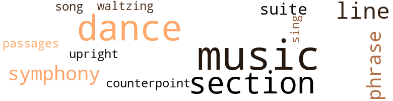
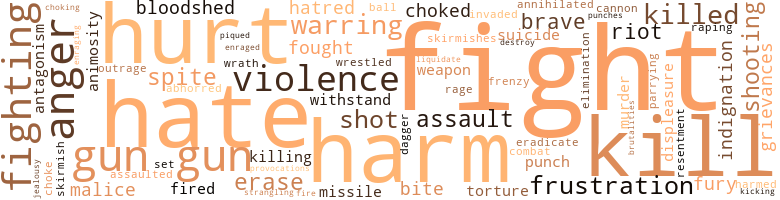
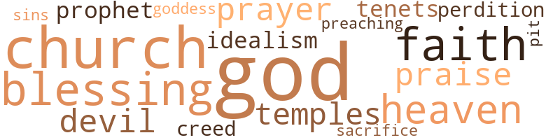

Wampala On the Hudson, by Lubin, Arthur (1972)
52 music-related terms matched in this text.
Most frequent terms in this topic: music (15); dance (10); section (8); line (4); symphony (3)
counterpoint.n.01
Definition: a musical form involving the simultaneous sound of two or more melodies
| word | sentence |
|---|---|
| counterpoint | He and his father would verbalize at counterpoint - he insisting on his point of view , his father tearing down his best arguments . |
dance.n.01
Definition: an artistic form of nonverbal communication
| word | sentence |
|---|---|
| dance | The dance record stopped playing . |
| dances | Max was bent on mastering the difficult steps demanded by the modern dances . |
| dance | " Thank you for the dance , " he said . |
| dance | Just then the master of ceremonies bounced toward the microphone on the stage and announced in his well trained , resonant voice that , following the next dance , the entertainment would resume . |
| dance | Charles saw the red of his angered blood dance before his eyes . |
dance.v.03
Definition: skip, leap, or move up and down or sideways
| word | sentence |
|---|---|
| dance | But she had managed to disengage herself from her husband 's strong arms long enough to invite him to dance . |
| dance | Georgina Patterson had also invited her husband Max to dance , and she was laboriously leading him through a Spanish number . |
| dance | And , whether to avoid listening to a challenge to her idea , or whether to taunt a skeptical Roy , she quickly excused herself and invited Morris to dance . |
| dance | Now , it 's my turn to ask you a question , why do n't you go and dance with the girl , and try to be a little more romantic than usual ? " |
| dance | Roy asked Mary to dance . |
| dance | The orchestra had sounded the first notes of a new piece , when Roy stood up and asked Lydia to dance . |
music.n.01
Definition: an artistic form of auditory communication incorporating instrumental or vocal tones in a structured and continuous manner
| word | sentence |
|---|---|
| music | I ca n't understand a word of it , but it sure sounds like music to my ears . " |
| music | " I have no doubt , " Luke said , " that music with its tonal feeling , its fluidity of meaning , its poignant passages was created to cover situations such as ours . |
| music | Tessy is right , we should strive to liberate our words from constraining meanings with more music , more poetry , and , above all , more intelligence . " |
| music | And so it was that , when Mary and Luke , having given their names and stated their purpose in asking to see her , the butler simply scrutinized them haughtily , then directed them into the music room . |
| music | She stood a while at the entrance of the music room and looked at them . |
| music | The brilliant midday sun bathed the whole estate with a rejuvenating insistence , and the precious solar rays fought their way against the unaccommodating air-conditioning system and pounded against the win-dowpanes , the blinds and the curtains of the music room . |
| music | The hearts had played their emotive notes , and the eternal symphony of understanding blended their throbbings into a rarely rendered piece of compassionate music . |
| music | The affirmation of material success soothes like music by anybody 's standards , she thought , and this held no exception for her . |
| music | She walked toward the record player to start the music . |
| music | The music , the sound of excited voices , and the din of the general merriment wafted over the tepid summer breeze to greet the newcomers in the night . |
| music | Fortunately , the music had just stopped . |
| music | The authenticity of her remarks seemed to have emanated from her visceral self like pure music . |
| music | " Would you like to listen to some classical music ? " |
| music | " Yes , I 'd love to listen to some music . " |
| music | Her presence was as uplifting as the music . |
passage.n.06
Definition: a short section of a musical composition
| word | sentence |
|---|---|
| passages | " I have no doubt , " Luke said , " that music with its tonal feeling , its fluidity of meaning , its poignant passages was created to cover situations such as ours . |
phrase.n.02
Definition: a short musical passage
| word | sentence |
|---|---|
| phrase | In front of her , she could n't see the painful reaction that registered on her host 's face after the phrase " a busy family . " |
| phrases | He exerted himself to supply her with all the fashionable phrases interpreting the visual arts that were making the rounds of cocktail parties . |
| phrases | Certainly , no harm was manifest in his friendly gesture , and she smiled again , as she tried to ponder over the meaning of his incongruous phrases that extolled the merits of his ludicrous art piece . |
section.n.01
Definition: a self-contained part of a larger composition (written or musical)
| word | sentence |
|---|---|
| section | Georgina had purposely cruised through the well-to-do section of Wampala , just to let Mary see the evidence of material success . |
| section | He lived in a walk-up apartment on the third floor of a framed wooden house , at the edge of the business section . |
| section | Luke 's parents owned a house in the best section of the black community . |
| section | Actually , this section of the community had recently qualified for a refurbishing under a federal urban renewal program . |
| section | Every time a section of the Mollet Enterprises is crumbling , he sends you to the rescue . " |
| section | It was as if she had been standing there a long time , watching the black section of town being put ablaze by hate . |
| section | As Mary and Tessy approached the heart of the busy section of town , the pace of their steps accelerated . |
| section | They had to cross the business district , then , turned toward the black section . |
sing.v.02
Definition: produce tones with the voice
| word | sentence |
|---|---|
| sing | There was a hush , as she began to sing . |
song.n.01
Definition: a short musical composition with words
| word | sentence |
|---|---|
| song | At the end of her song , the audience 's favorable response was overwhelming , and she was recalled several times for encores . |
suite.n.01
Definition: a musical composition of several movements only loosely connected
| word | sentence |
|---|---|
| suite | In the plushy executive suite of The Mollet Enterprises , Inc. the drama of her presence in town was being felt . |
| suites | The production plant and the warehouses were located at one end of the compound , and the office buildings were at the other end , dominated by the executive suites . |
symphony.n.01
Definition: a long and complex sonata for symphony orchestra
| word | sentence |
|---|---|
| symphony | And the summer pushed ahead amid a mild symphony of parched greenery and waltzing breeze from the Hudson . |
| symphony | The hearts had played their emotive notes , and the eternal symphony of understanding blended their throbbings into a rarely rendered piece of compassionate music . |
| symphony | Her full-skirted print dress wrapped her five feet and seven inches frame as pleasing as the rapture of a musical symphony . |
tune.n.01
Definition: a succession of notes forming a distinctive sequence
| word | sentence |
|---|---|
| line | I expected that black fellow you know to step out of line , but not Paul Manning . " |
| line | Somehow , her friends expected her to take the stronger " freedom now " line of argumentation against discrimination , if only to vindicate her parents ' efforts . |
| line | It 's up to you to get that monster back in line . " |
| line | Mary , Roy and Luke had to file out in a single line , meandering through rows of parked vehicles . |
upright.n.02
Definition: a piano with a vertical sounding board
| word | sentence |
|---|---|
| upright | He sat upright . |
waltz.v.01
Definition: dance a waltz
| word | sentence |
|---|---|
| waltzing | And the summer pushed ahead amid a mild symphony of parched greenery and waltzing breeze from the Hudson . |
248 violence-related terms matched in this text.
Most frequent terms in this topic: fight (21); gun (16); harm (11); hate (11); hurt (10)
abhor.v.01
Definition: find repugnant
| word | sentence |
|---|---|
| abhorred | He abhorred the idea of being lost in the anonymous industrial complex . |
aggravation.n.02
Definition: unfriendly behavior that causes anger or resentment
| word | sentence |
|---|---|
| provocations | Jameson was simmering with resentment ; for the first time after a long series of provocations , he seemed to have lost his self-control . |
anger.n.01
Definition: a strong emotion; a feeling that is oriented toward some real or supposed grievance
| word | sentence |
|---|---|
| anger | Now , her feeling of anger against Peter having somewhat subsided , she decided to see him again and confront him again with her unflinching decision to go on being a worthy wife and mother . |
| anger | He laughed to assuage her anger . |
| anger | Mary controlled her anger , and she looked at him intently , as if ready to throw him out . |
| anger | This time , his anger mounted faster than usual ; he could n't decide whether his wife was grossly hinting at their own loss of togetherness , or whether she was simply putting him on notice against interfering with " a lovely picture . " |
| anger | He abruptly veered on his heels and said , with a faint tremor of anger in his voice : " Mary , now that you 're going to be a part of the family , why do n't you ask Roy to take you on a tour of the firm ? |
| anger | He was trying to forget those disturbing words he had spoken in anger , egged on by his father 's indifferent attitude . |
| anger | Ironically , Tom Ferguson began to receive mysterious notes , giving him painful details about his wife 's misbehavior , and his ensuing anger dictated his course of action . |
| anger | Words stuck to his throat as being inadequate to express his anger . |
| anger | To compound the irony , a few of the more vocal of the civic minded activists decided to form a committee to crystallize their anger and formulate their displeasure to her cousin Charles . |
animosity.n.01
Definition: a feeling of ill will arousing active hostility
| word | sentence |
|---|---|
| animosity | His intimate revelation , oddly enough , endeared him to Georgina , and she swallowed the animosity she was nurturing against him . |
| animosity | I 've known for quite some time about Charles ' animosity toward Luke . |
assail.v.01
Definition: attack someone physically or emotionally
| word | sentence |
|---|---|
| assaulted | Charles sustained his gaze with what seemed to be a mounting sense of rage that put him in imminent danger of being brutally assaulted . |
battle.v.01
Definition: battle or contend against in or as if in a battle
| word | sentence |
|---|---|
| combat | However , when he found himself unable to combat his father 's opposition to his happiness , he felt indisposed , and he simply kept his chagrin to himself . |
bloodshed.n.01
Definition: the shedding of blood resulting in murder
| word | sentence |
|---|---|
| bloodshed | " Earlier , you mentioned something about bloodshed , what did you mean by that ? " |
| bloodshed | " Tell us about that bloodshed business . |
| bloodshed | " You 're the very fellow who can stop a bloodshed . " |
brush.n.06
Definition: a minor short-term fight
| word | sentence |
|---|---|
| skirmishes | Long days of inner skirmishes ensued . |
| skirmish | Roy forgot his carefully considered counsel to himself not to get involved in a verbal skirmish . |
cannon.n.04
Definition: heavy automatic gun fired from an airplane
| word | sentence |
|---|---|
| cannon | The word " rape " hit Paul 's eardrums with the same intense vibrations he would have felt had a cannon been shot next to his head . |
craze.n.02
Definition: state of violent mental agitation
| word | sentence |
|---|---|
| frenzy | The big moment , worked up to a near frenzy by the possessed of too much energy and too much idle time , commanded general attention . |
dagger.n.01
Definition: a short knife with a pointed blade used for piercing or stabbing
| word | sentence |
|---|---|
| dagger | The plaintive words darted into Henry 's heart like the sharp thrust of a steel dagger . |
defy.v.01
Definition: resist or confront with resistance
| word | sentence |
|---|---|
| withstand | She was ready to withstand Paul 's ostentatious show of efficiency . |
| withstand | You do n't know how devastating it is for body and soul when you have to withstand the burnings caused by proddings from unthinking men , especially when you do n't want to become a nihilist . " |
destroy.v.04
Definition: put (an animal) to death
| word | sentence |
|---|---|
| destroy | And , if you protest , they can always destroy you , then , say they 're sorry . " |
displeasure.n.01
Definition: the feeling of being displeased or annoyed or dissatisfied with someone or something
| word | sentence |
|---|---|
| displeasure | Roy was at a loss in trying to narrow down those of his activities which were the most likely to cause his father 's displeasure . |
| displeasure | To compound the irony , a few of the more vocal of the civic minded activists decided to form a committee to crystallize their anger and formulate their displeasure to her cousin Charles . |
eliminate.v.03
Definition: kill in large numbers
| word | sentence |
|---|---|
| annihilated | Indeed , the pleasant sensation the news gave her annihilated the gruesome experience she had with Paul . |
| eradicate | They say we are an affluent society , yet we do next to nothing to eradicate the degrading misery around us . |
elimination.n.05
Definition: the murder of a competitor
| word | sentence |
|---|---|
| elimination | An inner struggle raged in him , for in true conscience , would he not be equally blamable for his elimination ? |
enrage.v.01
Definition: put into a rage; make violently angry
| word | sentence |
|---|---|
| enraging | Over his shoulder , she saw the enraging colors of that petrifying painting , and , half horrified by it , half horrified by his unabashed concupiscence , she yelled again : " Please , leave me alone . |
| enraged | She had barely finished her second sentence , when Charles , enraged over Mary 's refusal to see him , rushed up the stairs like a storming paratrooper . |
erase.v.01
Definition: remove from memory or existence
| word | sentence |
|---|---|
| erase | And he had instantly made up his mind to erase the slightest possibility of scandal . |
| erase | But he could n't erase from his mind the fact that lately she had been a part-time mother . |
| erase | Let 's not talk in terms of voting in order to gag the issues , but rather in terms of providing the means to erase the causes of revolutions . |
| erase | " I miss him , " she added , just to erase any wrong impression on his part . |
| erase | And that 's supposed to erase the anguish he has caused me . " |
ferociousness.n.01
Definition: the trait of extreme cruelty
| word | sentence |
|---|---|
| brutalities | Having been forced into Charles ' organization , he had witnessed first hand the kinds of brutalities of which he was capable . |
fight.n.02
Definition: the act of fighting; any contest or struggle
| word | sentence |
|---|---|
| fighting | " Stop the fighting , " Roy cried . |
fight.n.05
Definition: a boxing or wrestling match
| word | sentence |
|---|---|
| fight | After all , where would you find a queen who had ever been dethroned without a bloody fight ? |
| fight | Paul saw himself about to be , once more , the victim of his wrath ; he saw another fight coming , and the stout try he had made to protect himself would soon cause him to roll on the floor under the impact of powerful blows . |
| fight | She never thought that she would be so closely involved in a controversial fight she had been all too willing to leave to others . |
| fight | Mary , through her parents , was no stranger to the fight over race prejudice . |
| fight | The situation became so tense that on one occasion it degenerated into a fist fight which he was also called upon to stop . |
| fight | The understanding between them was to engage Charles and his men in a fight . |
| fight | The only question on their minds was whether both sides were willing to keep the fight clean and free from further retaliation . |
| fight | Jameson 's men responded in kind , and the fight was on . |
| fight | And the groans and the invectives and the punches persisted even under a direct order from Roy to the men for them to stop the fight . |
| fight | The fight stopped instantly . |
| fight | " Do n't you think it was a real fight ? " |
| fights | A series of petty fights for survival ? " |
fight.v.02
Definition: fight against or resist strongly
| word | sentence |
|---|---|
| fought | The brilliant midday sun bathed the whole estate with a rejuvenating insistence , and the precious solar rays fought their way against the unaccommodating air-conditioning system and pounded against the win-dowpanes , the blinds and the curtains of the music room . |
| fight | " You have to cope with moments of temptation and fight off spurts of desperate ambition . " |
| fight | Let them fight , maim or kill each other as long as the profit making ability of this firm is not affected . " |
| fought | She fought back as well as she could , managing to protect her face and avert his avid , hungry lips . |
| fighting | " Stop it , " she cried , fighting to get back on her feet . |
| fought | He fought his father 's decision to promote your cousin Charles to foreman over a black brother named Jameson . |
| fight | No longer would he fight the urge he always had of taking her in his arms and of vowing unswerving protection to her . |
| fighting | He had written her a note stating that , after fighting the temptation of showing up , he had found it proper to send her his regrets instead . |
| fight | Perhaps , I would feel it more keenly than the next guy ; perhaps , I would go on to do a better job ; perhaps , I would fight legally ; perhaps , I would wait for the propitious time for me to ease out gracefully . |
| fight | Telling the truth would have , in his opinion , given his father much ammunition to fight vigorously Mary 's standing in the family . |
| fighting | In order for us to do that , we were not going to let our misunderstandings scare us into fighting among ourselves . |
| fight | How futile it was for them to fight over job priorities in a firm they did n't own ? |
| fighting | If these are your preferences , then , I think they are worth fighting for . " |
| fighting | She could n't help but recall Georgina 's words , " If these are your preferences , then , I think they are worth fighting for . '' |
| fighting | Her love for Roy , she knew , was worth fighting for . |
| fighting | " Well , I 'm in a fighting mood . |
| fight | A slight tremor ran through her ; she admitted to herself that it would be more fitting for the human race if Albert Maelstrom and Roy Mollet were more disposed to fight over her than to fight over machines . |
| fight | A slight tremor ran through her ; she admitted to herself that it would be more fitting for the human race if Albert Maelstrom and Roy Mollet were more disposed to fight over her than to fight over machines . |
| fight | Could it be that they had taken a pledge to fight it to the finish ? |
| fight | This is the sort of thing that moves me to fight for more creative action . |
frustration.n.03
Definition: a feeling of annoyance at being hindered or criticized
| word | sentence |
|---|---|
| frustrations | I hope you 're not letting the frustrations of life get you down . '' |
| frustration | " I do n't mean that kind of frustration , '' he said , and turned around to look for the waiter . |
| frustration | Having sensed the profound frustration put in simple terms by Tessy , she abandoned her task and gave the old cook her full attention . |
| frustration | The difficult questions of frustration , of exploitation , and of civil rights were brushed aside for the time being , and everyone offered his best wishes to Roy . |
| frustration | They had succumbed to the weight of frustration , and they had decided to take matters into their own hands . |
| frustrations | " You 'll be faced with some frustrations and with some antagonisms ; these are the ways of mortal men . |
fury.n.01
Definition: a feeling of intense anger
| word | sentence |
|---|---|
| fury | By the end of the week , the busy tongues in town had refrained somewhat from directing their fury at Mary simply because she had the wisdom not to give them added cause . |
| fury | The elements , barring sudden fury , seemed to keep themselves in check , yielding to a more peaceful and serene course . |
| rage | Charles sustained his gaze with what seemed to be a mounting sense of rage that put him in imminent danger of being brutally assaulted . |
| fury | When it became clear to her that " Roy seeing Lydia " was the extent of the news , she experienced something like a controlled fury . |
gag.v.06
Definition: cause to retch or choke
| word | sentence |
|---|---|
| choke | As a matter of fact , the sudden entrance had caused him to choke on the whiskey , not because the young man 's presence there was forbidden , but because the visit was utterly unexpected . |
| choked | The sheer pleasure he experienced from the soft contact with her skin - as exhilarating as a kiss - choked him . |
| choked | Mary choked . |
| choking | The suspense was choking Mary . |
| choked | Henry 's words choked him . |
grudge.n.01
Definition: a resentment strong enough to justify retaliation
| word | sentence |
|---|---|
| grievances | Each generation comes up with the same set of grievances . |
| grievances | But you must admit that our generation is replete with causes and grievances galore . |
| grievances | I should listen patiently to their grievances . " |
gun.n.01
Definition: a weapon that discharges a missile at high velocity (especially from a metal tube or barrel)
| word | sentence |
|---|---|
| gun | Henry noticed a new black raincoat hanging on the closet door at the head of the bed and a new gun on the rack adding fire power to a small arsenal . |
| gun | Charles put his can of beer down on top of the icebox , stood up and went to the gun rack . |
| gun | He pulled out the new gun and showed it to Henry . |
| gun | I must admit , the gun is a gift from Manning . |
| gun | But there 's much to gain than this gun . " |
| gun | As he admired the smooth lines of the gun , he pointed it inadvertently at Henry 's head . |
| Guns | Guns make me nervous . " |
| gun | Charles lowered the barrel of the gun to the floor , laughing . |
| gun | This gun is not for shooting white folks , " he said , replacing it on the rack . |
| gun | " You said Paul Manning contributes dues to your organization , and he gives you a gun . |
| guns | He checked his hunting paraphernalia ; his boots , his jacket , his haversack , his guns , and his cartridges . |
| gun | Not only would he use the occasion to talk things over , but he would use it also to present him with the gift of a brand new gun . |
| gun | He got into his car , placed the gun on the floor under his legs , and he started out . |
| gun | For a moment , Charles ' vigilance slackened , as he checked the gun under his legs . |
| gun | He bent down , picked up the gun from under his legs , and loaded it . |
| gun | The bullet boomed out of the gun . |
| gun | The gun shot and the cries for help had pierced the snug complacency of the quiet evening in suburban Wampala . |
| gun | When Charles pulled the trigger of his gun , the bullet killed , not only the wrong man , but the only Mollet he had really cared about . |
harm.v.01
Definition: cause or do harm to
| word | sentence |
|---|---|
| harm | " It does n't harm anyone to be exposed to lofty thoughts . |
| harm | " Why would anyone want to harm Luke ? " |
| harmed | The whole thing is interrelated ; if we manage to keep you from being harmed , we would , at the same time , be keeping Mary from being wounded in her heart . " |
| harm | People like Mr. Mollet are not afraid to harm you , to cause you great pain , because they know they can get away with it . |
| harm | " But I imagine it does n't harm to look to more pleasant events in the days ahead . |
hate.n.01
Definition: the emotion of intense dislike; a feeling of dislike so strong that it demands action
| word | sentence |
|---|---|
| hate | " Is there really a reason for all this outburst of hate ? " |
| hate | She had departed pervaded by a state of numbness rather than hate : a few power-wielding persons in the community had certainly been the cause of her eventual bereavement . |
| hatreds | For severed days , hand in hand , they trod unafraid , as if they were friendly phantoms from an ethereal universe , upon diverse grounds of budding roses , of milling races with their old recurring hatreds . |
| hatred | I hope you do , because the hatred and the killing , in the long run , will destroy us all . " |
| hatred | The blood in his head had boiled inordinately to blind him with hatred : a black man had taken over the functions he thought were his to perform as a member of the family . |
| hate | Then , Georgina , Louise and Mary-Ann , knowing how much she had suffered because of her cousin 's exercise in hate , left without saying anything that would have aggravated her condition . |
| hate | It was as if she had been standing there a long time , watching the black section of town being put ablaze by hate . |
hate.v.01
Definition: dislike intensely; feel antipathy or aversion towards
| word | sentence |
|---|---|
| hate | " I hate to do this , " Henry went on , " but I ca n't do a good job if people are in the way . " |
| hate | " My parents have also taught me not to hate . " |
| hate | I hate to part with it , but I must . |
| hate | He reminds me of these fellows who would make love to black women , then , hate themselves afterwards for having exulted at the stirring , breath-taking ejaculation . " |
| hate | " I thank you for the consolation ; right now , I do n't know whether to hate the guy , or to be afraid of him as a sexual maniac . " |
| Hate | Hate had killed him . |
| hate | What woman can cause them to hate each other so ? |
| hate | " I hate to discourage your efforts by sounding harsh . |
hostility.n.02
Definition: a state of deep-seated ill-will
| word | sentence |
|---|---|
| antagonism | It seems that some sort of antagonism has developed between Roy and Albert because of a girl . |
| antagonisms | " You 'll be faced with some frustrations and with some antagonisms ; these are the ways of mortal men . |
hurt.v.04
Definition: cause damage or affect negatively
| word | sentence |
|---|---|
| hurt | Secure in the knowledge that the girls were too young to be hurt , or shocked by her sudden grief , she let the tears flow down her cheeks freely . |
| hurt | Why is it that man has such an urge to hurt ? |
indignation.n.01
Definition: a feeling of righteous anger
| word | sentence |
|---|---|
| outrage | Charles admitted that Roy , with his liberal notions about fair play , had talked him into accepting this black outrage . |
| indignation | Mary , immobilized by the reflex to cover her breasts , suffered the indignation of being caressed against her will . |
| indignation | When he realized that the imploring voice he had heard a moment ago was Mary 's , it was as if thunder had struck : his indignation rose to the boiling point . |
| indignation | Her indignation at the injustice about to be committed by her cousin and his friends was so overwhelming that she found herself uttering the words impulsively , reacting to her own feeling of persecution . |
injury.n.01
Definition: any physical damage to the body caused by violence or accident or fracture etc.
| word | sentence |
|---|---|
| harm | No one can measure with any sort of accuracy the good or the harm that follows a personal action taken to please an impersonal group . " |
| harm | Yes , the harm was done . |
| harm | " The harm is done and forgotten , " she said . |
| harm | If modern science made it possible for boys and girls to be mated by a computer , she could see no harm in favorably slanting the characteristics in the field of her own research for happiness , and she concluded : " I 've stayed close to home long enough . |
| harm | " He 's liable to go out and do harm to another unsuspecting poor girl . " |
| harm | " Mary is under the impression that you 're not aware of Charles ' bad intention of doing harm to you . " |
| harm | Certainly , no harm was manifest in his friendly gesture , and she smiled again , as she tried to ponder over the meaning of his incongruous phrases that extolled the merits of his ludicrous art piece . |
invade.v.01
Definition: march aggressively into another's territory by military force for the purposes of conquest and occupation
| word | sentence |
|---|---|
| invaded | She had heard the word " trouble , " and the whole picture of her past sad experience invaded her memory . |
jealousy.n.01
Definition: a feeling of jealous envy (especially of a rival)
| word | sentence |
|---|---|
| jealousy | For a moment , she regretted that she was n't the type to torture a man with jealousy . |
kick_back.v.02
Definition: spring back, as from a forceful thrust
| word | sentence |
|---|---|
| kicking | Is the baby still kicking ? " |
kill.v.10
Definition: cause the death of, without intention
| word | sentence |
|---|---|
| kill | Let them fight , maim or kill each other as long as the profit making ability of this firm is not affected . " |
| killed | A little roughing up never killed anybody . |
| killed | He could n't help remarking , " This is the road to the scene of the accident - the place where Albert Maelstrom was killed . " |
| kill | Stop this nonsense , or you 'll kill us both . " |
| kill | " You said you wanted to talk business , instead you wanted to kill me . " |
| kill | I agree with Mary , why would anyone want to kill his son ? " |
| kill | " Frankly , I think Charles has been struck with a demented urge to kill , " he told her , glad to have unloaded his conscience . |
| kill | " How can you say anything in a situation such as this one , where a close blood relative has made up his mind to kill a good friend ? |
| kill | " Whenever they come to an impasse , they decide to kill the adversary 's body , with - out grasping the truth that you can not kill the ideas which kept that body alive . " |
| kill | " Whenever they come to an impasse , they decide to kill the adversary 's body , with - out grasping the truth that you can not kill the ideas which kept that body alive . " |
| killed | " Someone has killed Roy Mollet . " |
| killed | Hate had killed him . |
| killing | To be sure , his experience had conditioned him to believe that killing a black man was n't a dire crime , and that a majority of his peers would be inclined to exonerate him of it . |
| killed | The one that killed Roy Mollet . " |
| killed | " You fool , you 've killed Roy . " |
| killed | When Charles pulled the trigger of his gun , the bullet killed , not only the wrong man , but the only Mollet he had really cared about . |
| kill | How many times do they have to go round trying to kill each other ? " |
| kill | She could n't recall anything in the past few hours she had spent with him that would indicate his desire to kill himself . |
killing.n.02
Definition: the act of terminating a life
| word | sentence |
|---|---|
| killing | I hope you do , because the hatred and the killing , in the long run , will destroy us all . " |
malice.n.01
Definition: feeling a need to see others suffer
| word | sentence |
|---|---|
| spite | In spite of an eventful Sunday , Mary had slept well . |
| spite | They were reminded that , in spite of past misconduct , they were still simple mortals , no more , no less . " |
| malice | Her problem now was how to keep her promise to Peter Mollet without showing crude malice toward Mary . |
| malice | The essence of her remark , although made in all sincerity and without malice , went directly to the core of Mary 's concern about Roy . |
| spite | Louise Carter , in spite of her advanced months of pregnancy , had persuaded her husband Morris to accompany her . |
| spite | Somehow , she had always known it in spite of his slowness in showing his affection . |
| spite | " I think it 's about time somebody did something to save our young men in spite of themselves . |
| malice | When the time came for the two women to venture out into the streets , the possibility that they might encounter hostile agents of malice made them walk shoulder to shoulder , closer to one another than they would have walked under normal circumstances . |
murder.n.01
Definition: unlawful premeditated killing of a human being by a human being
| word | sentence |
|---|---|
| murders | " Intimidate , if they must , but they should be willing to use persuasion , not brute physical coercion , or mass murders . " |
| murder | The murder of Roy Mollet spurred her again , and she simply overwhelmed her husband with her political acumen . |
musket_ball.n.01
Definition: a solid projectile that is shot by a musket
| word | sentence |
|---|---|
| ball | " Now , let 's suppose you were called upon to find a cure for them , how would you get the ball rolling ? " |
neutralize.v.04
Definition: get rid of (someone who may be a threat) by killing
| word | sentence |
|---|---|
| liquidate | want to liquidate everything I own here , and I want never to come back . " |
open_fire.v.01
Definition: start firing a weapon
| word | sentence |
|---|---|
| fired | No less an affluent personage than John Maelstrom had fired the loaded verbal missile . |
| fired | His first conjecture must have prevailed , for , after a short pause , he fired his answer like a heavy missile , " Charles works for me . " |
| fire | And when she had savored to her satisfaction the smile that animated Roy 's face , she turned to her cousin , " Charles , I wo n't ask Mr. Mollet to fire you for chasing him away . |
pain.v.02
Definition: cause emotional anguish or make miserable
| word | sentence |
|---|---|
| hurt | And because Roy was hurt , he became angry . |
| hurt | Mrs. Gruenther brought one hand to her forehead , as if Mary 's words had hurt her . |
| hurt | And this kind of youthful bluntness had the immediate effect of bringing forth dissimilar reactions from them : his father would reject whatever idea he was advancing , and his mother , careful not to contradict him , would feel thoroughly hurt . |
| hurt | As a first step , it would n't hurt to try to analyze what makes the young people of today mistrust and rebel against their elders . |
| hurt | I know it will hurt . |
| hurt | He is the sort of man that would consider himself very hurt if you and Roy did n't seek his consent . " |
| hurt | She was deeply hurt by Peter 's degrading treatment of her , and her first impulse was to disassociate herself with the entire Mollet family . |
| hurt | " Every morning , I remind myself to be calm and not to get angry at people who are trying to hurt me ; this is part of love . |
parry.v.01
Definition: impede the movement of (an opponent or a ball)
| word | sentence |
|---|---|
| parrying | He would reserve his comments to parrying those remarks of his father which were pointedly addressed to him . |
pique.v.01
Definition: cause to feel resentment or indignation
| word | sentence |
|---|---|
| piqued | And , piqued by her sense of smell , she followed the scented body . |
projectile.n.01
Definition: a weapon that is forcibly thrown or projected at a targets but is not self-propelled
| word | sentence |
|---|---|
| missile | No less an affluent personage than John Maelstrom had fired the loaded verbal missile . |
| missile | His first conjecture must have prevailed , for , after a short pause , he fired his answer like a heavy missile , " Charles works for me . " |
punch.n.01
Definition: (boxing) a blow with the fist
| word | sentence |
|---|---|
| punch | Henry took one quick step forward and , with a well planted punch , knocked him out cold over the couch . |
| punch | Roy playfully threw him a mock punch . |
| punches | And the groans and the invectives and the punches persisted even under a direct order from Roy to the men for them to stop the fight . |
rape.n.03
Definition: the crime of forcing a woman to submit to sexual intercourse against her will
| word | sentence |
|---|---|
| assault | I protest against this assault on my person . |
| assault | Ever since she became aware of the intended assault upon his life , she felt she had to do something , lest in her inertia her conscience would brand her a criminal as well . |
| assault | Instead of wading in over the plushed carpet as she would have done normally to purr her message into Peter 's ears , she stopped cold at the door , disturbed by the sight of his compromising sexual assault upon his daughter-in-law-to-be . |
| assault | Being subjected to a sexual assault by her would-be father-in-law was not the kind of thing against which she had learned to protect herself . |
| assault | And affluent men should not be allowed to assault decent young ladies without paying for it . " |
rape.v.01
Definition: force (someone) to have sex against their will
| word | sentence |
|---|---|
| raping | One way or the other , he would brood over the proposition that he ought to teach him a lesson for having attempted raping his cousin . |
resentment.n.01
Definition: a feeling of deep and bitter anger and ill-will
| word | sentence |
|---|---|
| resentment | Jameson was simmering with resentment ; for the first time after a long series of provocations , he seemed to have lost his self-control . |
riot.n.01
Definition: a public act of violence by an unruly mob
| word | sentence |
|---|---|
| riot | Harris and Odere kept in contact by radio with several check points and did all that was in their power in order to prevent a full blown riot . |
| riot | Are you inciting me to riot ? " |
| riot | I do n't relish your inciting the men to a race riot . " |
| riot | Are we in the middle of a riot ? " |
shoot.v.02
Definition: kill by firing a missile
| word | sentence |
|---|---|
| shot | The word " rape " hit Paul 's eardrums with the same intense vibrations he would have felt had a cannon been shot next to his head . |
| shot | " He 's been shot . " |
| shot | Charles had shot the wrong man . |
| shot | He 's been shot . " |
| shot | One of these crazy activists might 've shot him . " |
| shot | Never suspecting for one minute that he had shot the wrong man , he had gone to visit his father and had made a date to go hunting with him in the morning . |
shooting.n.02
Definition: killing someone by gunfire
| word | sentence |
|---|---|
| shooting | " I would n't laugh about shooting anyone . |
| shooting | " Have you heard of the shooting ? |
| shooting | " Yes , I heard of the shooting . |
| shootings | How many shootings are you talking about ? " |
| shooting | In the end , they casually mentioned again Roy 's fatal shooting . |
sic.v.01
Definition: urge to attack someone
| word | sentence |
|---|---|
| set | How could she be set upon by a maniac like Paul Manning , and be strangely ignored by a young man like Roy Mollet ? |
sting.n.03
Definition: a painful wound caused by the thrust of an insect's stinger into skin
| word | sentence |
|---|---|
| bite | The covert reproachful tone in his remark , on any other morning , would have passed unnoticed by his mother , but , under the circumstances , the full meaning of it registered in her consciousness like an involuntary sharp bite of the tongue . |
| bite | Mary began eating , and she marveled at every bite . |
| bite | But she caught herself in time and gulped in a bite of remorse . |
strangle.v.01
Definition: kill by squeezing the throat of so as to cut off the air
| word | sentence |
|---|---|
| strangling | They are making it possible for society to continue to exist by freeing it from outmoded , strangling concepts . " |
suicide.n.01
Definition: the act of killing yourself
| word | sentence |
|---|---|
| suicide | And , all the time , she played with the innocent darlings , as if they were about to be orphaned - the idea of suicide was not foreign to her . |
| suicide | In the end , she rallied enough strength to face up to him , and she presented him with her desperate resolution that , unless he gave her back her self-respect , she would commit suicide . |
torment.v.01
Definition: torment emotionally or mentally
| word | sentence |
|---|---|
| torture | He saw the dungeon executioner lay out the victim 's body on the torture rack - his father 's body - and he asked him to apply one more turn to the rack 's wheel . |
| torture | For a moment , she regretted that she was n't the type to torture a man with jealousy . |
violence.n.01
Definition: an act of aggression (as one against a person who resists)
| word | sentence |
|---|---|
| violence | You must admit that , short of violence , they have a right to demonstrate . " |
| violence | I want no violence in my house . |
| violence | But he had committed an act of violence , and she could not condone it . |
| violence | " It 's a waste of time , '' Mary said , " trying to convince people like my cousin that violence does n't accomplish anything . '' |
| violence | If whole nations , with their accumulated wisdom , culture , wealth and diplomatic savvy , have to resort to violence in order to settle their disputes , what is an ill-informed individual to do but to emulate the examples that prevail ? |
| violence | " In the meantime , " Luke added , " the poor fellow may use more violence to save what he probably calls his self-respect and his birthright . " |
| violence | Luke and Mary trembled , n6t in fear , but in overwhelming joy ; they had made the long journey through vanity , greed , hate , violence and death to the pure liberating force of love . |
war.v.01
Definition: make or wage war
| word | sentence |
|---|---|
| warring | The furniture was sparse but strategically placed , as if to ac - commodate several warring groups at a time . |
| warring | One of the things he felt he had to dispel was the notion , professed by his father , that he should stay away from the warring factions of workers at the plant . |
| warring | He saw the elegantly arranged parental dinner table transformed into a baronial banquet for warring chieftains who were celebrating their successful plundering raids on their victims . |
| warring | And each time , he was called upon to work out a solution for a modus vivendi between the warring factions . |
| warring | " Roy , " he said , " nobody is preparing war against you ; you 're warring against yourself . " |
| warring | " I 'm warring against myself ? |
| warring | Somehow , the warring factions got wind of the fact that Roy was again leaving town on an assignment . |
weapon.n.01
Definition: any instrument or instrumentality used in fighting or hunting
| word | sentence |
|---|---|
| weapon | She was still holding the intended weapon firmly in her hand . |
| weapon | We are prepared to use the oldest weapon that 's ever been available to us - we shall give our husbands the ultimatum of the bed : no sexual relations , unless they back our candidate . " |
weather.v.01
Definition: face and withstand with courage
| word | sentence |
|---|---|
| brave | Partly to save face , partly to demonstrate to his men how brave he was , he urged them on by throwing the first blow . |
| brave | He has to show how brave he is . " |
| brave | Mary-Ann had leaned back to give friendly support when she heard Mary 's remark , and she hastened to add , " Louise is a brave girl . |
| brave | They could n't begin to suspect that two brave but frightened souls had taken it upon themselves to face the ugly side of life . |
wrath.n.01
Definition: intense anger (usually on an epic scale)
| word | sentence |
|---|---|
| wrath | Paul saw himself about to be , once more , the victim of his wrath ; he saw another fight coming , and the stout try he had made to protect himself would soon cause him to roll on the floor under the impact of powerful blows . |
wrestle.v.01
Definition: combat to overcome an opposing tendency or force
| word | sentence |
|---|---|
| wrestled | But noticing that the morning was almost gone , he wrestled with a third alternative : go to his room to get some sleep . |
42 religion-related terms matched in this text.
Most frequent terms in this topic: God (8); faith (4); church (4); blessings (3); praise (2)
blessing.n.05
Definition: the act of praying for divine protection
| word | sentence |
|---|---|
| blessings | " You gave your blessings to the boycotting of my parents . " |
| blessing | I think , therefore , that Mary 's return should be looked upon as a blessing rather than as a threat . |
| blessings | " Children , go with my blessings , " she said . |
| blessings | I believe that our country is still committed to the principle of securing happiness to all , and the blessings of liberty to ourselves and our posterity . " |
church.n.02
Definition: a place for public (especially Christian) worship
| word | sentence |
|---|---|
| church | I wonder if she 'll be in church tomorrow . " |
| church | The Sunday worshipers had congregated in church , allowing him to take furious advantage of the temporarily deserted avenue . |
| church | Too late to accompany his mother to the Sunday services , having stayed at some friends ' house after an all-night party in the next town , he had a choice between two alternatives : get properly dressed to join his mother in church , or get properly dressed to join his father in a boating contest . |
| church | Why then did n't you go to church and let her show you off to the ladies ? |
creed.n.01
Definition: any system of principles or beliefs
| word | sentence |
|---|---|
| creed | " I do n't want to discourage any man from working under another man because of race , creed or color . " |
dogma.n.01
Definition: a religious doctrine that is proclaimed as true without proof
| word | sentence |
|---|---|
| tenets | He had moved away following the basic tenets of his upbringing and education . |
eden.n.01
Definition: any place of complete bliss and delight and peace
| word | sentence |
|---|---|
| heavens | I thought the heavens were going to open up , the way your mother asked for you this morning . |
| heavens | Its hues intertwined to form a sickly texture , no doubt , to punish the heavens for having dared to create the infinite marvels of the natural rainbow . |
| heaven | Their love did not displease the gods in heaven . |
god.n.03
Definition: a man of such superior qualities that he seems like a deity to other people
| word | sentence |
|---|---|
| God | God knows , every time you turn around these days prices of goods and taxes are being escalated . " |
| God | " If , as you say , there is so little effort connected with labor relations , why in God 's name do n't you come down , sometimes , and find out for yourself what it is all about , or else , why do n't you listen to me ? |
| God | When will all the people in this God 's country go back to simple sanity ? " |
| God | But I will say this : I think Hell was created when God gave man the faculty to think . |
| God | For God 's sake , leave me alone . " |
| God | For God 's sake , leave me alone . " |
| God | For God 's sake , leave me alone , '' filled the air , and the desperate words echoed mournfully in the quiet of the outer-office . |
| God | Her prayers to God in his behalf could not save him . |
| gods | Their love did not displease the gods in heaven . |
goddess.n.01
Definition: a female deity
| word | sentence |
|---|---|
| goddess | She stood at the microphone in her long stage gown like a mythological brown goddess . |
hell.n.03
Definition: (Christianity) the abode of Satan and the forces of evil; where sinners suffer eternal punishment; - John Milton; ; -Dr. Johnson
| word | sentence |
|---|---|
| perdition | Much later , he came to understand that his awful sense of perdition had been keener whenever mere sexual gratification was involved . |
| pit | It seems that she used her charm to pit Roy against Albert . " |
idealism.n.01
Definition: (philosophy) the philosophical theory that ideas are the only reality
| word | sentence |
|---|---|
| idealism | He did n't profess to be a crusader , but a stubborn idealism disposed him to believe that the welfare of the workers and their harmony on the job counted for as valuable an economic factor as their capacity to produce . |
praise.n.02
Definition: offering words of homage as an act of worship
| word | sentence |
|---|---|
| praise | Not that he objected to verbal praise , but why is it , he asked himself , that the praise in terms of money was going Charles ' way ? |
| praise | Not that he objected to verbal praise , but why is it , he asked himself , that the praise in terms of money was going Charles ' way ? |
prayer.n.01
Definition: the act of communicating with a deity (especially as a petition or in adoration or contrition or thanksgiving)
| word | sentence |
|---|---|
| prayer | Her chin had dropped to her chest , bowing her head in a sort of prayer . |
| prayers | Her prayers to God in his behalf could not save him . |
prophet.n.02
Definition: someone who speaks by divine inspiration; someone who is an interpreter of the will of God
| word | sentence |
|---|---|
| prophet | " Henry , why are you such a prophet of gloom ? |
religion.n.01
Definition: a strong belief in a supernatural power or powers that control human destiny
| word | sentence |
|---|---|
| faith | Mary did her best to convince herself and Tessy that they should keep the faith and hope that Luke would n't have to fall prey to any foul play . |
| faith | Roy began , with carefully chosen words backed by his faith in the mutual friendship , to tell Luke about the threat on his life . |
| faith | This is not the time to quit ; this is the time to be at her side , to buttress her confidence and faith in us . |
| faith | You must n't lose your self-control , or your faith . |
sacrifice.v.04
Definition: make a sacrifice of; in religious rituals
| word | sentence |
|---|---|
| sacrifice | As for her emotions , the vital force that had bound her so completely to Roy just a moment ago , she had to sacrifice them to a practical consideration . |
satan.n.01
Definition: (Judeo-Christian and Islamic religions) chief spirit of evil and adversary of God; tempter of mankind; master of Hell
| word | sentence |
|---|---|
| devil | I think I 'll twist the devil 's tail , if he condemns me to hell . |
| devil | So much light-hearted behavior , so much devil may care attitude was barely tolerated by her . |
sermon.n.02
Definition: a moralistic rebuke
| word | sentence |
|---|---|
| preaching | " Okay , Mary , no preaching , not even on Sunday - Come , hop in ; let me be your chauffeur . |
sin.n.06
Definition: violent and excited activity
| word | sentence |
|---|---|
| sins | And everyone gave a feverish send-off to this particular summer , offering symbolic libations to expiate his , or her sins . |
temple.n.03
Definition: an edifice devoted to special or exalted purposes
| word | sentence |
|---|---|
| temples | The shock of gray hair at his temples emphasized the penetrating blue of his eyes . |
| temples | He ran his fingers through his full head of hair , thickly greying at the temples . |